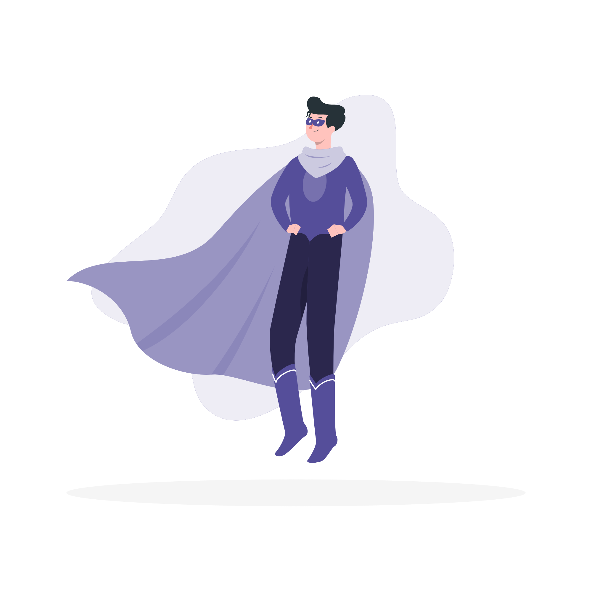

Olá ?????, Bem vindo!
| Home
| Account
| My recepients
| Basket
| Orders
| My cards
| Sponsoring
| Info / Help
| Logout
© Marcos Henrique - SPTech / ADS
POR QUE SKINS?
Skins não são apenas aparências diferentes para personagens em jogos online, elas causam diversos sentimentos em quem as usam. Desde sensação de poder, coragem entre outros...
Iremos falar mais sobre isso a frente!
